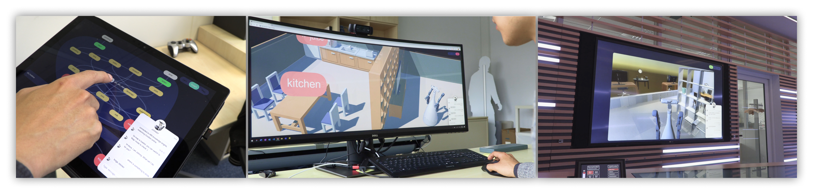

A User Interface for Sense-making of the Reasoning Process while Interacting with Robots
Previously, graph visualization has been used wildly by developers to make sense of knowledge representations. However, due to lacking the link between abstract knowledge of the real-world environment and the robot's actions, traditional visualization tools are incompatible for expert-user to understand, test, supervise and modify the graph-based reasoning system with the embodiment of the robots. Therefore, we developed an interface which enables robotic experts to send commands to the robot in natural language, then interface visualizes the procedures of the robot mapping the command to the functions for querying in the commonsense knowledge database, links the result to the real world instances in a 3D map and demonstrate the execution of the robot from the first-person perspective of the robot. After 3 weeks of usage of the system by robotic experts in their daily development, some feedback was collected, which provides insight for designing such systems.
Universial Access
A web-based graphical user interface (GUI) is designed and implemented. Expert users can visit the interface anywhere at Honda Research Institute with any device. The dialogue box of the interface allows the user to type in commands to the robot in natural language and receive the answer from the robot. Users can switch between camera-mode, graph-mode and map-mode.